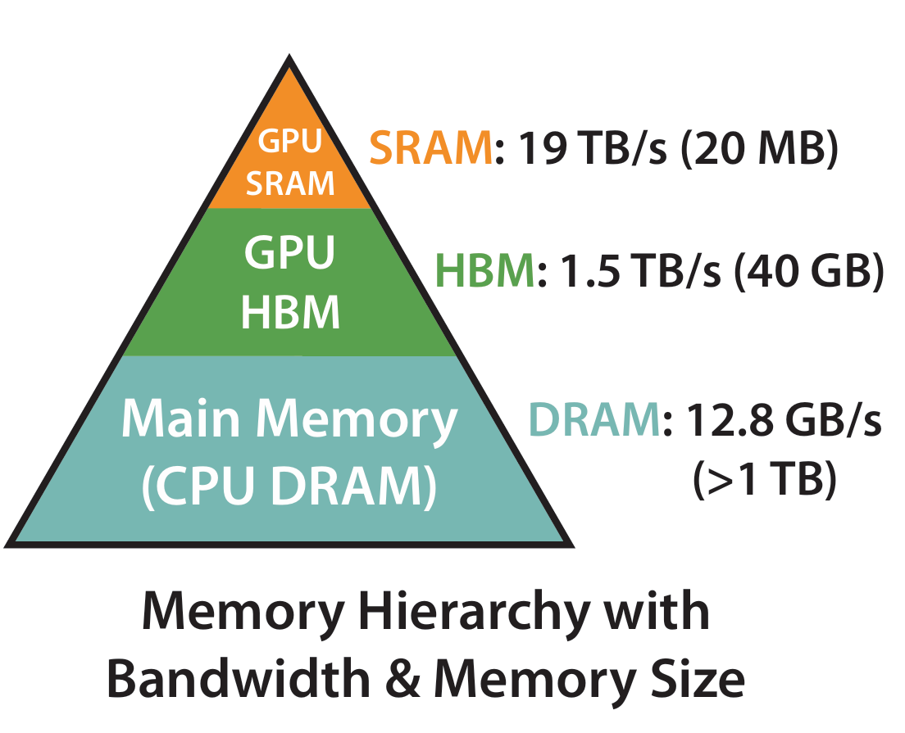

Chapter 10.1 为什么 Attention 是 IO-Bound
在前面的章节里，我们已经从数学结构上理解了 Attention：给定 \(Q, K, V\)，我们先计算相似度矩阵 \(S = QK^\top\)，再做 softmax，最后得到输出 \(O = \text{softmax}(S)V\)。从公式上看，它不过是几次矩阵乘法和一个逐元素的非线性操作。按直觉来说，矩阵乘法是 GPU 最擅长的事情，因此 Attention 理应是一个计算密集型的算子。
但当我们真正去分析它在 GPU 上的执行过程时，就会发现，Attention 往往不是被算力限制，而是被内存访问限制。也就是说，它更像是一个 IO-bound 问题，而不是 compute-bound 问题。这意味着，即使我们的 GPU 还有大量浮点算力没有被用满，Attention 也可能已经跑不动了，因为瓶颈不在算，而在搬。那么，问题出在哪儿了呢？
答案就藏在 Attention 的注意力矩阵里。这个矩阵的规模是 \(n \times n\) 的，随序列长度平方增长。当序列长度变大时，真正拖慢速度的，往往不是乘法算子本身，而是频繁地在 GPU 的 HBM（高带宽显存）和 SRAM（片上缓存）之间来回读写大块数据。也就是说，Attention 的性能瓶颈，本质上来自数据移动，而不是算术运算。
接下来，我们就从一个更底层的视角出发，拆解 Attention 在硬件上的真实执行过程，看看它到底把时间花在了哪里。
10.1.1 GPU 性能模型与算术强度
在介绍 Attention 的时候，我们提出了一个看起来有些反直觉的结论：Attention 的瓶颈往往不在算力，而在内存访问。但是，在分析 Attention 为什么是 IO-bound 之前，我们需要先建立一个最基本的 GPU 性能视角。
当我们说一个算子“快”或者“慢”时，它到底受什么限制？和《计算机组成原理》里讲的一样，只有两类资源会成为瓶颈：
- 算术计算能力（Compute Throughput）：每秒能做多少次浮点运算（FLOPs）
- 内存带宽（Memory Bandwidth）：每秒能从内存搬运多少字节数据（Bytes/s）
任何一个算子，在执行时都要做两件事：读取数据，对数据进行计算。如果算力先被耗尽，我们称它是 compute-bound 的；如果内存带宽先被耗尽，我们称它是 IO-bound 的。那么，我们如何判断一个算子更可能受哪种资源限制？
在高性能计算领域，有一个非常核心的指标，那就是 算数强度（Arithmetic Intensity）：
\[ \text{Arithmetic Intensity} = \frac{\text{FLOPs}}{\text{Bytes Moved}} \]
也就是说，每搬运 1 字节数据，能够做多少次浮点运算。这个指标直接决定了算子更接近 compute-bound 还是 IO-bound。
从直觉上可以这样理解：
- 如果一个算子读一点数据，就反复计算很多次，那么它的算术强度高，就更可能是 compute-bound；
- 如果一个算子读一点数据，只算几下就丢掉了，那么它的算术强度低，就更可能是 IO-bound。
举个简单的例子，矩阵乘法为什么通常是 compute-bound？
因为在矩阵乘法中，每个输入元素都会被复用多次。例如，在 \(C = AB\) 中，矩阵 \(A\) 的每个元素会被用来计算 \(C\) 中的一整行，而矩阵 \(B\) 的每个元素会被用来计算 \(C\) 中的一整列。假设矩阵 \(A\) 和 \(B\) 的大小都是 \(n \times n\)，那么每个元素被复用的次数大约是 \(n\) 次。因此，矩阵乘法的算术强度大约是 \(O(n)\)，也就通常是 compute-bound。
同时，我们还要考虑一个点，那就是 GPU 的算力增长速度远远快于显存带宽的增长速度。这种现象被称为 内存墙（Memory Wall）。也就是说，现代 GPU 的 FLOPs 数字非常惊人，但显存带宽的提升是相对缓慢的。如果一个算子不能有效地复用数据，而是频繁地从 HBM 里读写大块张量，那么即使算术本身不复杂，也会被内存带宽卡住。
而且，和 CPU 一样，GPU 的内存并不是一个统一空间，而是分层的：

- HBM（High Bandwidth Memory）：容量大，但访问延迟高，速度约为 1.5 TB/s
- SRAM / Shared Memory / L2 Cache：容量小，但速度快，访问延迟低，速度约为 19 TB/s
- 寄存器（Register）：容量极小，但最快，访问延迟几乎为零
所以，一个算子真正高效的方式，就尽量把数据留在片上（SRAM 或者寄存器），减少对 HBM 的访问。因为一旦频繁访问 HBM，即使每次访问都“很快”，累积起来仍然会成为性能瓶颈。
那么，Attention 里的 \(QK^\top\)、softmax 和 \(V\)，真的像矩阵乘法那样有良好的数据复用吗？还是说，它在结构上就天然缺乏足够高的算术强度？
10.1.2 标准 Attention 的 IO 分析
现在，我们已经有了一些判断工具：
- 看 FLOPs
- 看数据搬运量
- 判断算子的算术强度
- 判断 compute-bound 还是 IO-bound
这一节，我们就把它真正用在标准 Attention 上。
我们从最常见的形式出发（忽略 batch 和 head 维度，只看单头，忽略缩放）：
\[ S = QK^\top, \quad P = \text{softmax}(S), \quad O = PV \]
设序列长度为 \(n\)，特征维度为 \(d\)，那么：
- \(Q, K, V \in \mathbb{R}^{n \times d}\)
- \(S, P \in \mathbb{R}^{n \times n}\)
- \(O \in \mathbb{R}^{n \times d}\)
我们来分别分析 FLOPs 和 IO。
10.1.2.1 FLOPs 分析
- 第一步：计算 \(QK^\top\)。这是一个矩阵乘法，涉及 \(n \times d\) 和 \(d \times n\) 的乘积，结果是 \(n \times n\) 的矩阵。FLOPs 大约是 \(2n^2d\)（每个输出元素需要 \(d\) 次乘加操作，总共有 \(n^2\) 个输出元素，一次乘加算 2 次 FLOPs）。
- 第二步，计算 softmax。softmax 的 FLOPs 主要来自于指数运算和归一化。每个元素需要计算一个指数（1 FLOP）和一个除法（1 FLOP），FLOPs 大约是 \(2n^2\)（忽略处理数值稳定性的额外 FLOPs）。
- 第三步，计算 \(PV\)。这是另一个矩阵乘法，涉及 \(n \times n\) 和 \(n \times d\) 的乘积，结果是 \(n \times d\) 的矩阵。FLOPs 大约是 \(2n^2d\)。
把这些加起来，总的 FLOPs 大约是：
\[ \text{FLOPs} \approx 2n^2d + 2n^2 + 2n^2d = 4n^2d + 2n^2 \approx O(n^2d) \]
10.1.2.2 IO 分析
我们现在关心的是：需要从 HBM 搬多少数据？
先看标准 Attention 的计算流程：
- 从 HBM 读取 \(Q, K\)，计算 \(S\)
- 把 \(S\) 写回 HBM
- 从 HBM 读取 \(S\)，计算 \(P\)
- 把 \(P\) 写回 HBM
- 从 HBM 读取 \(P, V\)，计算 \(O\)
- 把 \(O\) 写回 HBM
从流程里不难发现，中间的 \(n \times n\) 矩阵被完整写入、再读回，造成了大量的数据搬运。注意，因为这里的矩阵都很大，SRAM 装不下，所以只能把它们放在 HBM 里，每次读写都要经过内存总线，造成了巨大的 IO 开销。
我们来具体计算一下。
- 输入读取。我们需要从 HBM 里读取 \(Q, K, V\)，每个都是 \(n \times d\) 的矩阵，所以总共是 \(3nd\) 个元素，每个元素 4 字节（假设元素类型是 float32），总共是 \(8nd\) 字节。
- 中间矩阵 \(S\) 的读写。\(S\) 是 \(n \times n\) 的矩阵，每个元素 4 字节，所以读写一次就是 \(8n^2\) 字节。
- 中间矩阵 \(P\) 的读写。\(P\) 也是 \(n \times n\) 的矩阵，每个元素 4 字节，所以读写一次也是 \(8n^2\) 字节。
- 输出写回。输出 \(O\) 是 \(n \times d\) 的矩阵，每个元素 4 字节，所以写回是 \(8nd\) 字节。
把这些加起来，总的 IO 大约是：
\[ \text{IO} \approx 8nd + 8n^2 + 8n^2 + 8nd = 16n^2 + 16nd \approx O(n^2) \]
10.1.2.3 算术强度分析
现在我们有了 FLOPs 和 IO 的估计，我们就可以计算算术强度：
\[ \text{Arithmetic Intensity} = \frac{\text{FLOPs}}{\text{Bytes Moved}} \approx \frac{4n^2d}{16n^2} = O(d) \]
计算得到 Attention 的算术强度是 \(O(d)\)。这是一个常数，在实际应用中，\(d\) 通常为 64、128 或 256，因此算术强度通常在 16~64 FLOPs/byte 的范围内。相比之下，现代 GPU（例如 NVIDIA A100）的峰值计算能力与内存带宽之比约为 200 FLOPs/byte。这意味着，只有当算术强度显著高于这一阈值时，计算才能达到 compute-bound 状态，而 Attention 的算术强度远低于该阈值。因此，其性能受到内存带宽的限制，而不是计算能力的限制。
所以，Attention 属于典型的 memory-bound，其性能瓶颈在于 HBM 与片上存储之间的数据搬运，而不是浮点运算本身。
10.1.3 为什么长序列会放大 IO 问题
在上一节里，我们已经看到，标准 Attention 的 IO 主导项是那个 \(n \times n\) 的中间矩阵 \(S\)。现在我们进一步问一个问题：如果序列长度 \(n\) 变大，问题会如何演化？
我们已经知道，\(\text{FLOPs} \approx O(n^2d)\)，而 \(\text{IO} \approx O(n^2)\)。也就是说，当序列长度翻倍时，IO 增长 4 倍。而 GPU 的带宽是固定的。这不是一个慢慢增长的问题，而是一个爆炸式增长的问题。
长序列带来的问题有两个。一个是注意力矩阵 \(S\) 的大小，当 \(n=2048\) 时，\(S\) 的大小已经是 16MB（假设 float32），而当 \(n=4096\) 时，\(S\) 的大小就达到了 64MB，而且这还只是单头。还要加上注意力头数量，批处理大小，显存压力会迅速变得不可接受。另外一个问题是带宽。容量问题还可以通过分布式计算等方式缓解，但带宽问题无法绕开。每次访问 \(S\) 都需要从 HBM 里搬运大量数据，这会成为性能的主要瓶颈，导致 Attention 在长序列上的效率急剧下降。
因此，长序列不仅增加了计算量，更重要的是，它极大地放大了 IO 问题，使得标准 Attention 在处理长序列时变得非常低效。而且，由于内存墙的存在，GPU 算力的提升速度要远远快于内存带宽的提升速度。对于 compute-bound 的算子来说，算力的提升可以直接转化为性能提升；但对于 IO-bound 的算子来说，算力的提升并不能带来性能提升，因为瓶颈在内存访问上。因此，随着序列长度的增加，Attention 的性能问题会变得越来越严重。
如果我们真正理解了这一点，那么一个自然的问题就会出现：我们是否真的需要把整个 \(S\) 存下来？
如果答案是“不需要”，那么我们就可以把 IO 的复杂度从 \(O(n^2)\) 降到接近 \(O(nd)\)，从而把 Attention 推向 compute-bound，使其不再受内存带宽的限制。这就是 FlashAttention 想做的事情。
下一节，我们将正式进入 FlashAttention 的核心思想，利用矩阵分块、在线更新和 kernel 融合来消灭 IO。